A calm fishing game that lives on your screen: a fisherman in a little boat on a thin strip above the Windows taskbar, or the whole landscape running as a wallpaper behind your icons. He fishes on his own while you work, and you step in whenever you feel like it.
A fisherman lives on your computer's taskbar. He fishes on his own while you work, from the Araguaia to the sea off Noronha. You glance over now and then, click when one bites, and buy a bigger boat. It also runs as a wallpaper.
Most fishing games ask you to stop everything and play. À Deriva does the opposite: it was made to live alongside your day. It sits on your screen, as a thin strip above the taskbar or as a wallpaper behind your icons, and keeps fishing on its own while you work, study or play something else. If you happen to be watching when a fish bites, one click makes the catch better. If you're not, the fish goes into the hold anyway.
The places are all Brazilian: the Araguaia, the Rio Negro, the flooded forest of Furnas, the coast of Santa Catarina and the sea off Fernando de Noronha. The weather changes on its own, the rain rolls in slowly, night falls, and each place has its own animals, its own rare phenomena and a monster hiding in the deep.
Every now and then a stork flies by carrying a hat. Click it and the hat is yours: a real Steam item, torn, worn or new, that you can wear, trade or sell on the Community Market.
1920×1080 PNG, straight from the game. Click a caption to open the full-size file.
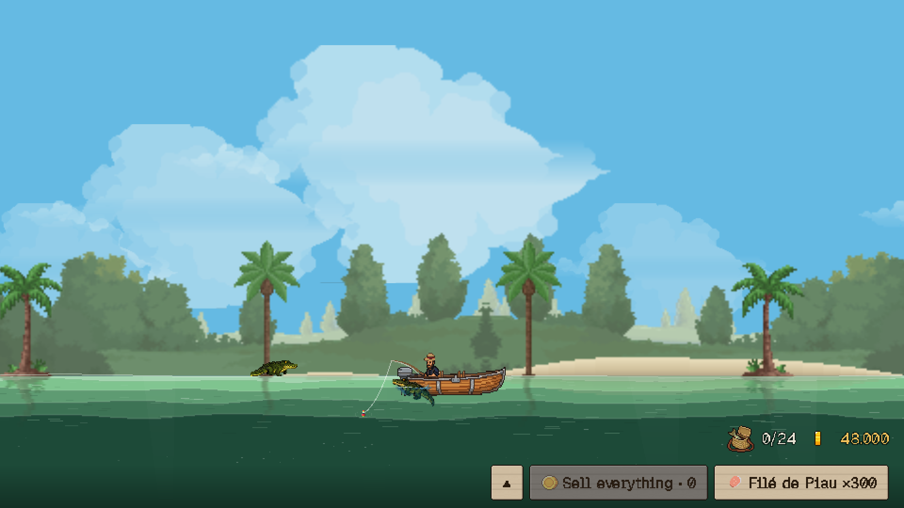
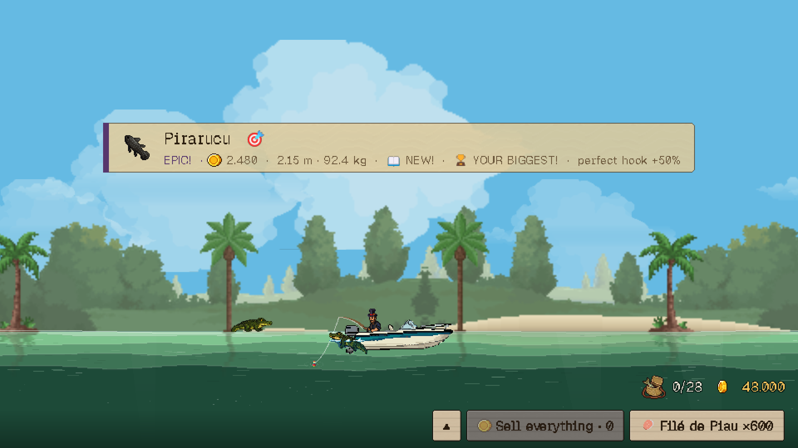
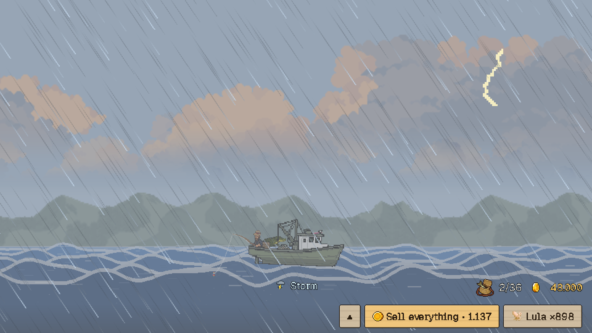
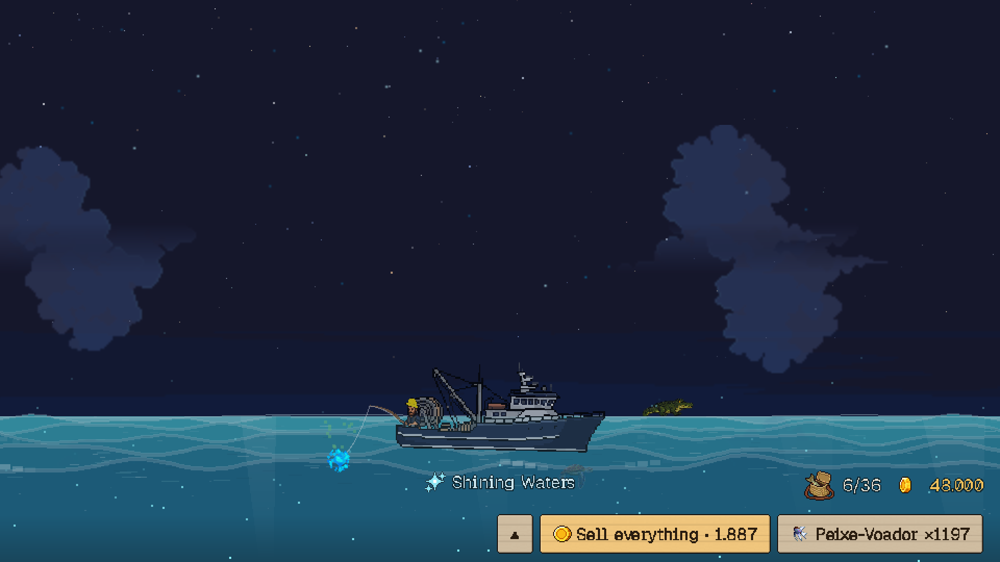
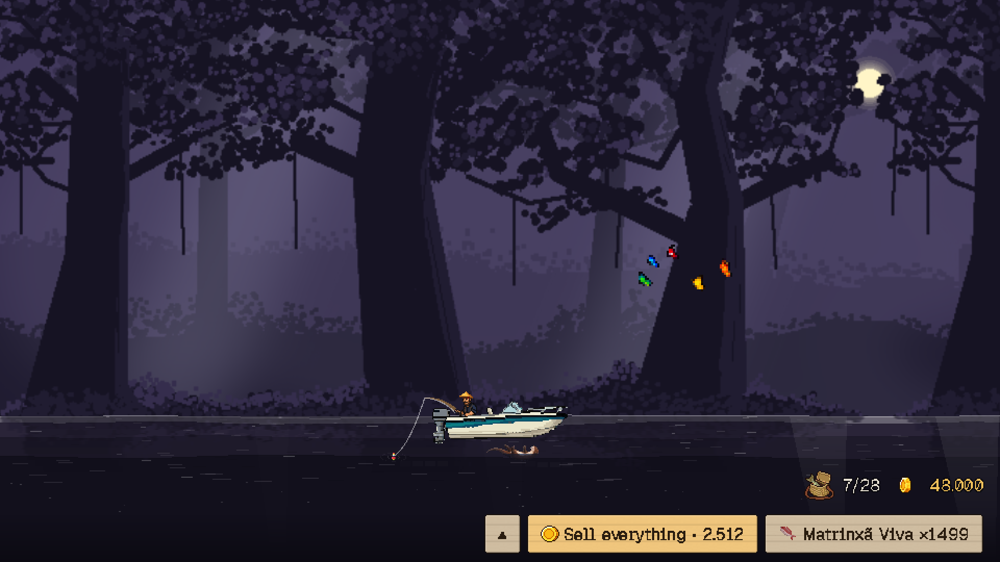
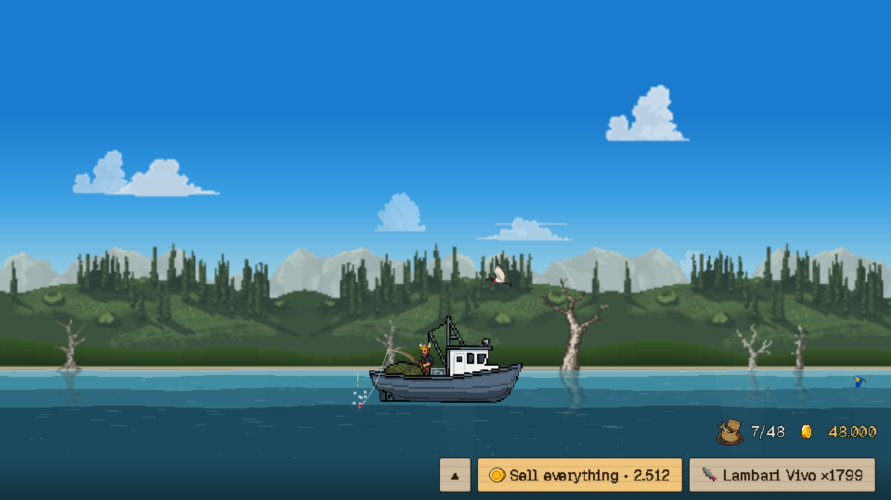
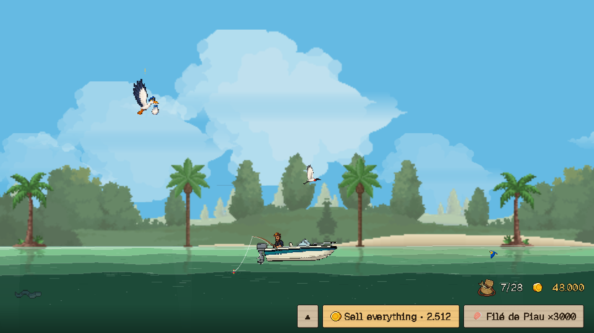
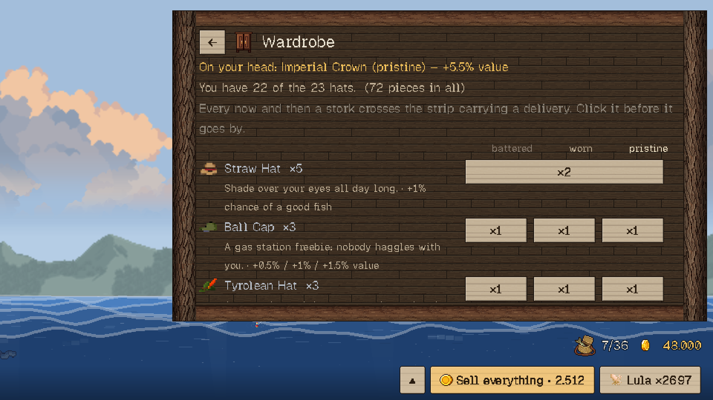
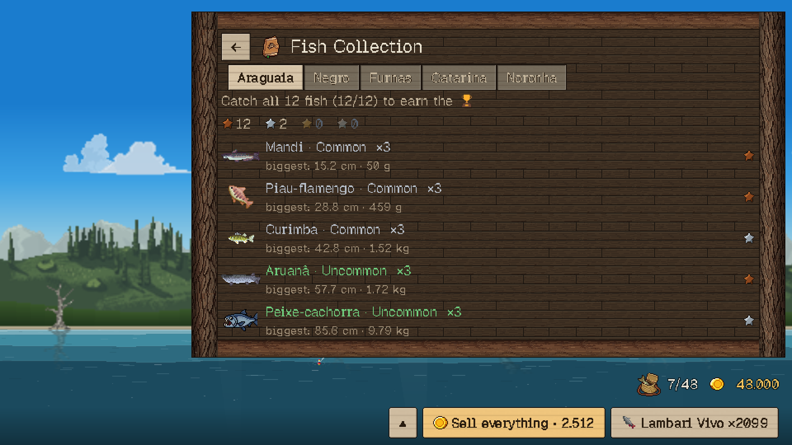
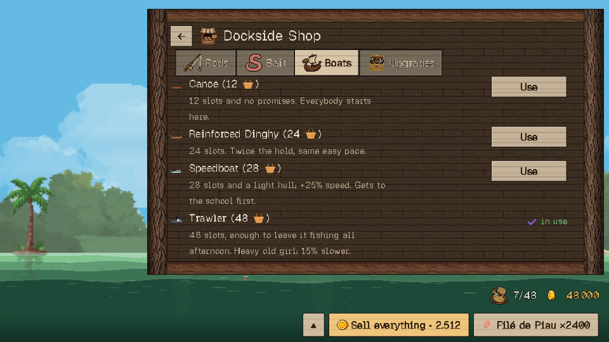
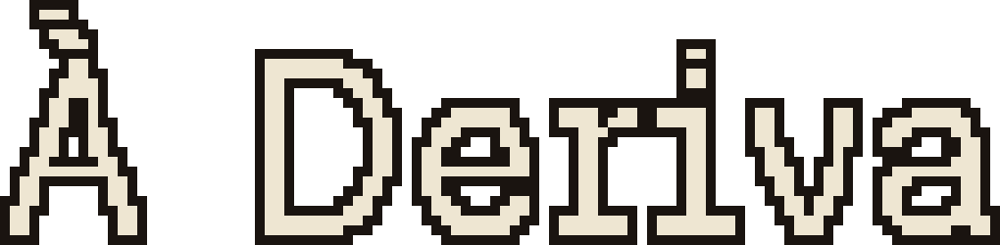
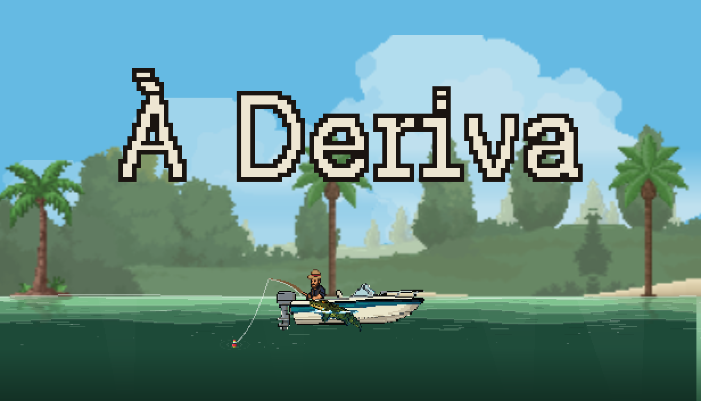
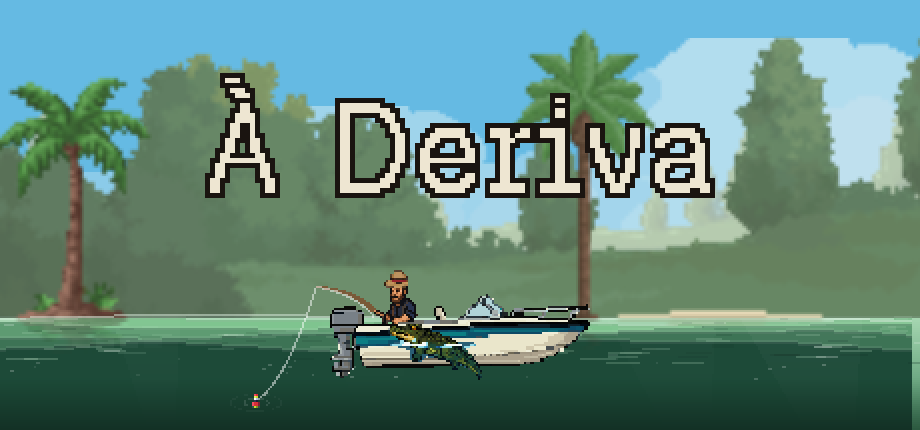
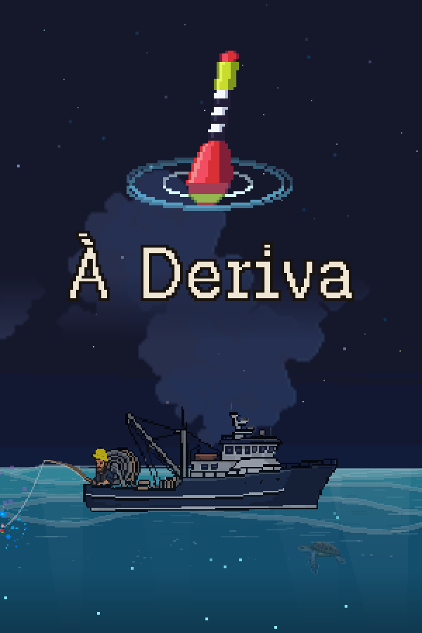
Wide key art, 3840×1240: download.
À Deriva is made by one person: cheeetz, an independent developer from Santa Catarina, Brazil. By day he works in customer support; the game was made in his free time and on a lot of nights when he should have been sleeping. It's his first game. The studio name, G. Studios, comes from a Discord server he shares with the friends who tested the game from its very first version.
"I've always loved fishing with my dad, but we rarely got the chance. Here in Brazil we have a saying: 'Stressed out? Go fishing.' One day I thought: if I couldn't go fishing, fishing could come to my screen."
The world was built with the help of AI tools and a lot of material that other creators make available — music, sounds, art. Every one of them is in the game's credits, even those who don't ask for credit.
For interviews, review keys or anything else, write to aderivagame@outlook.com. Steam curators can also reach the game through Curator Connect.
You're free to use the screenshots, GIFs, video and art on this page in articles, videos and streams about À Deriva.